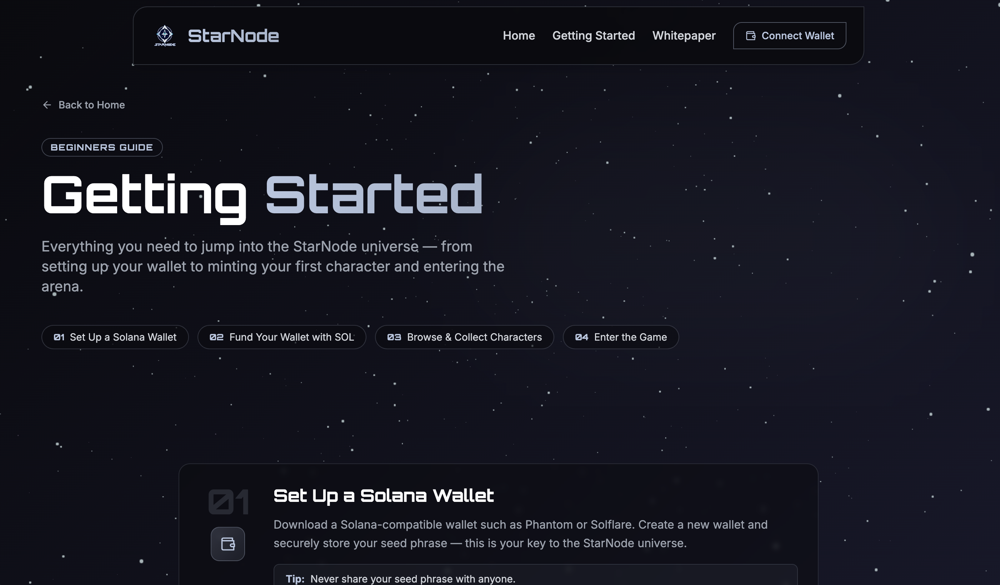
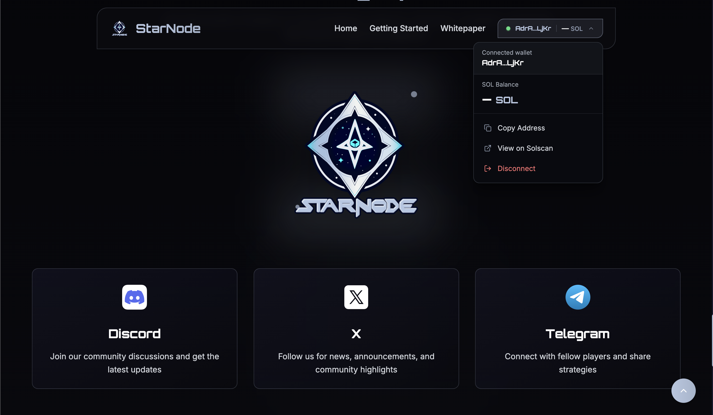

StarNode
A Premier sci-fi TCG project on the Solana Blockchain


About
StarNode is a Premier sci-fi TCG project on the Solana Blockchain
Tech Stack
React.js
TailwindCSS
A Premier sci-fi TCG project on the Solana Blockchain


StarNode is a Premier sci-fi TCG project on the Solana Blockchain